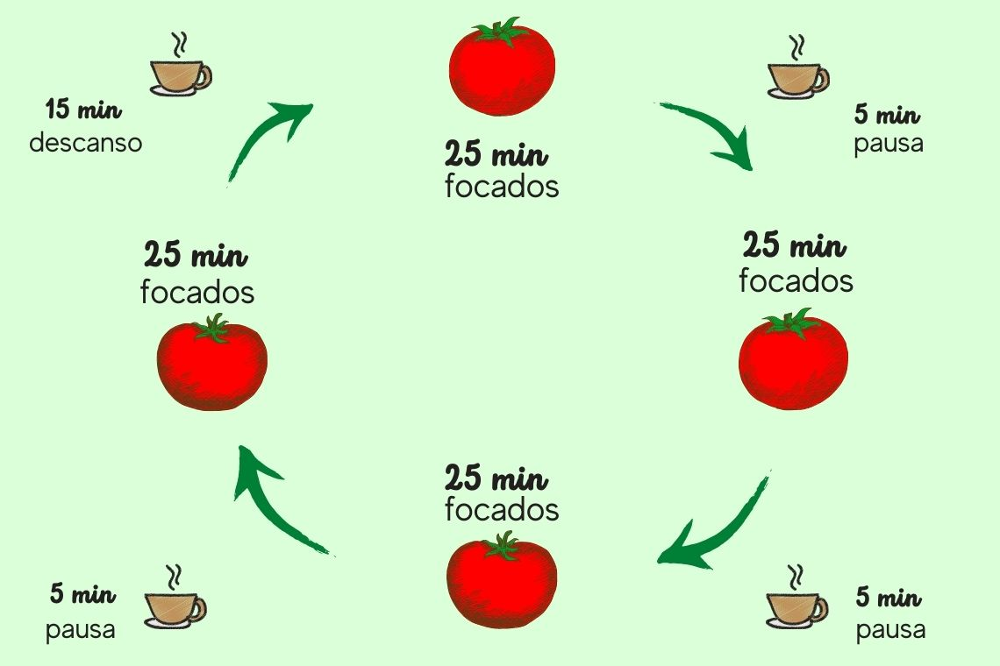

Bem vindo ao site tecnica de pomodoro
o que é tecnica de pomodoro?
A técnica Pomodoro é um método de gestão do tempo que alterna períodos curtos de trabalho focado (25 minutos) com pausas breves (5 minutos) para aumentar a produtividade.
